| 2 | 4 | 2 | 5 | 6 | 0 | 3 |
Week 4: Estimators and their Distributions
STA238: Probability, Statistics, and Data Analysis II
Michael Jongho Moon
January 29, 2026
Continued…
Recall…
The sampling distribution of \(\overline{W}_n\) is
\[\overline{W}_n\sim{N}\left(3.4, \frac{0.15^2}{n}\right)\]
Sampling distribution of a normal mean
In general, the sample mean of a random sample from \({N}(\mu,\sigma^2)\) follows the following sampling distribution:
\[{N}\left(\mu, \frac{\sigma^2}{n}\right).\]
What does the sampling distribution tell us about the quality of the estimator?
Let’s begin with the expected value.
We want the expected value to be
_______________________ .
What does the sampling distribution tell us about the quality of the estimator?
\(\overline{W}_n\) is an example of a ________________ estimator of \(\mathbb{E}(W)\).
An estimator \(T\) is called an unbiased estimator for the parameter \(\theta\) if
\[\mathbb{E}(T)=\theta\]
irrespective of the value of \(\theta\).
The difference \(\mathbb{E}(T)-\theta\) is called the bias of \(T\); if the difference is nonzero, then \(T\) is called biased.
What makes a good estimator?
- Accuracy: Bias
Example: Coffee shop
Suppose Michael models the daily counts of coffee cups sold at his coffee shop as a random sample from a Poisson distribution. The daily counts from the past week are shown below.
How can Michael estimate the following quantities using the data?
- Mean number of coffees sold per day.
- The probability of selling zero coffee in a day.
Example: Coffee shop
Suppose Michael models the daily counts of coffee cups sold at his coffee shop as a random sample from a Poisson distribution. The daily counts from the past week are shown below.
| 2 | 4 | 2 | 5 | 6 | 0 | 3 |
How can Michael estimate the following quantities using the data?
- Mean number of coffees sold per day.
- The probability of selling zero coffee in a day.
Let \(Y\sim\text{Pois}(\lambda)\) represent the true daily coffee sales count.
Example: Coffee shop
Suppose Michael models the daily counts of coffee cups sold at his coffee shop as a random sample from a Poisson distribution. The daily counts from the past week are shown below.
| 2 | 4 | 2 | 5 | 6 | 0 | 3 |
How can Michael estimate the following quantities using the data?
- Mean number of coffees sold per day.
- The probability of selling zero coffee in a day.
Let \(Y\sim\text{Pois}(\lambda)\) represent the true daily coffee sales count.
- \(\bar{y}_7\)=3.143.
- \(\bar{Y}_7\) is an unbiased estimator.
- Let \(p_0=P(Y=0)\).
- \(\widehat{p}_0=1/7\) using relative frequency. This is an unbiased estimator.
- \(\widehat{p}_0'=e^{-3.143}\) using the probability mass function with \(\widehat{\lambda}=\bar{y}_7\). This is a biased estimator.
Evaluate whether the estimators are unbiased.
Example: Coffee shop
\[Y_1, Y_2,...,Y_n\overset{i.i.d}{\sim}\text{Pois}(\lambda)\]
Evaluate whether the estimators are unbiased.
For \(\mathbb{E}(Y)=\lambda\),
\[\overline{Y}_n\]
For \(p_0=P(Y=0)=e^{-\lambda}\), \[\widehat{p}_0=\frac{\sum_{i=1}^n \mathbb{1}_{\{Y_i=0\}}}{n}\] \[\widehat{p}'_0=e^{-\widehat{\lambda}}=e^{-\overline{Y}_n}\]
Jensen’s Inequality
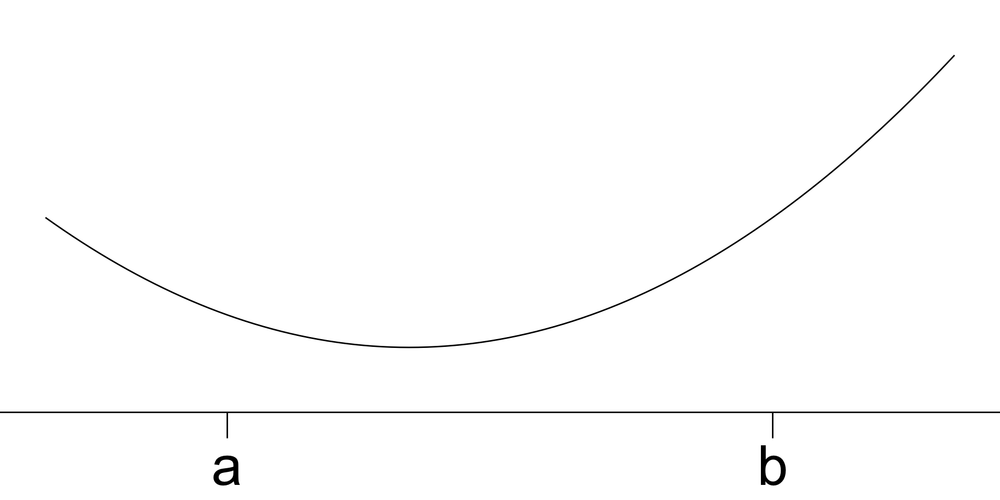
Let \(g\) be a convex function, and let \(X\) be a fandom variable. Then,
\[g\left(\mathbb{E}\left[X\right]\right) \le \mathbb{E}\left[g\left(X\right)\right].\]
When \(g\) is strictly conves,
\[g\left(\mathbb{E}\left[X\right]\right) < \mathbb{E}\left[g\left(X\right)\right].\]
Example: Coffee shop
\[Y_1, Y_2,...,Y_n\overset{i.i.d}{\sim}\text{Pois}(\lambda)\]
Evaluate whether the estimators are unbiased.
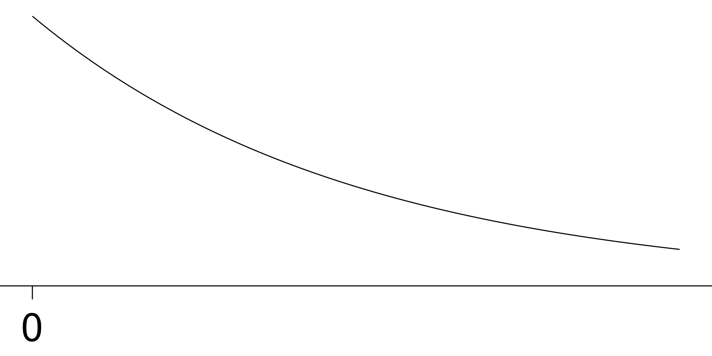
\[\widehat{p}'_0=e^{-\widehat{\lambda}}=e^{-\overline{Y}_n}\]
Example: Unbiased \(T_1\) vs biased \(T_2\)
\[\mathbb{E}(T_1)=p_0\]
\(T_1\) is unbiased.
\[\mathbb{E}(T_2)>p_0\]
\(T_2\) is biased.
What makes a good estimator?
- Accuracy: Bias
- Precision
Example: Unbiased \(T_1\) vs biased \(T_2\)

Example: Unbiased \(T_1\) vs biased \(T_2\)
Which is more precise?
\(\text{Var}(T_1)>\text{Var}(T_2)\) but \(T_2\) is biased.
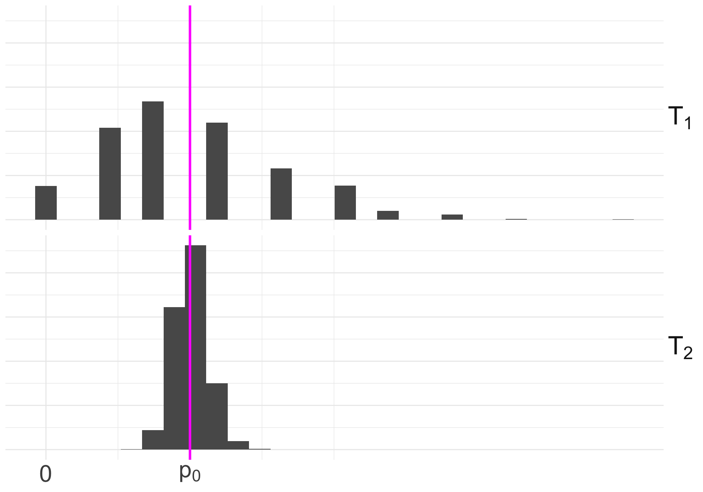
Mean squared error
We can use the mean squared error to compare efficiency of estimators.
Let \(T\) be an estimator for a parameter \(\theta\). The mean squared error of \(T\) is the defined as
\[\text{MSE}(T)=\mathbb{E}\left[\left(T-\theta\right)^2\right].\]
Why MSE?
- It’s the expected value of squared distance of the estimator from the parameter, or the error.
- The smaller the mean squared error, the more efficient an estimator.
Why MSE?
- It accounts for both the bias and the variance of an estimator.
\[\begin{split} \text{MSE}(\widehat{\theta}) &= \mathbb{E}\left[\left(\widehat{\theta}-\theta\right)^2\right] \\ &= \text{Var}\left(\widehat{\theta}-\theta\right)+\left[\mathbb{E}\left(\widehat{\theta}-\theta\right)\right]^2\\ &= \text{Var}\left(\widehat{\theta}\right)+\left[\text{bias}\left(\widehat{\theta}\right)\right]^2 \end{split}\]
Given two estimators, \(T_1\) and \(T_2\), for a parameter \(\theta\), we can say \(T_1\) is a more efficient estimator when
\[\text{MSE}(T_1)<\text{MSE}(T_2)\]
irrespective of the value of \(\theta\).
Efficiency of estimators
Given two estimators, \(T_1\) and \(T_2\), for a parameter \(\theta\), we say \(T_1\) is a more efficient estimator when
\[\text{MSE}(T_1)<\text{MSE}(T_2)\]
irrespective of the value of \(\theta\).
\[\implies \text{MSE}(\widehat{\theta})=\text{Var}\left(\widehat{\theta}\right)\iff \text{bias}\left(\widehat{\theta}\right)=0\]
Efficiency of estimators
Given two estimators, \(T_1\) and \(T_2\), for a parameter \(\theta\), we say \(T_1\) is a more efficient estimator when
\[\text{MSE}(T_1)<\text{MSE}(T_2)\]
irrespective of the value of \(\theta\).
Given two unbiased estimators, \(T_1\) and \(T_2\), for a parameter \(\theta\), we say \(T_1\) is a more efficient estimator when
\[\text{Var}(T_1)<\text{Var}(T_2)\]
irrespective of the value of \(\theta\).
\(\cfrac{\text{Var}(T_1)}{\text{Var}(T_2)}\) is called the relative efficiency of \(T_2\) over \(T_1\).
Example: Is \(T_2\) more efficient?
lambdas <- seq(7) # irrespective of lambda values
bias_t1 <- numeric(7)
bias_t2 <- numeric(7)
var_t1 <- numeric(7)
var_t2 <- numeric(7)
m <- 1000 # number of estimates for each lambda
n <- 100 # sample size for each estimate
for (lambda in lambdas) {
t1 <- numeric(m)
t2 <- numeric(m)
for (i in seq(m)) {
sales <- rpois(n, lambda)
t1[i] <- mean(sales == 0)
t2[i] <- exp(-mean(sales))
}
bias_t1[lambda] <- mean(t1) - exp(-lambda)
bias_t2[lambda] <- mean(t2) - exp(-lambda)
var_t1[lambda] <- var(t1)
var_t2[lambda] <- var(t2)
}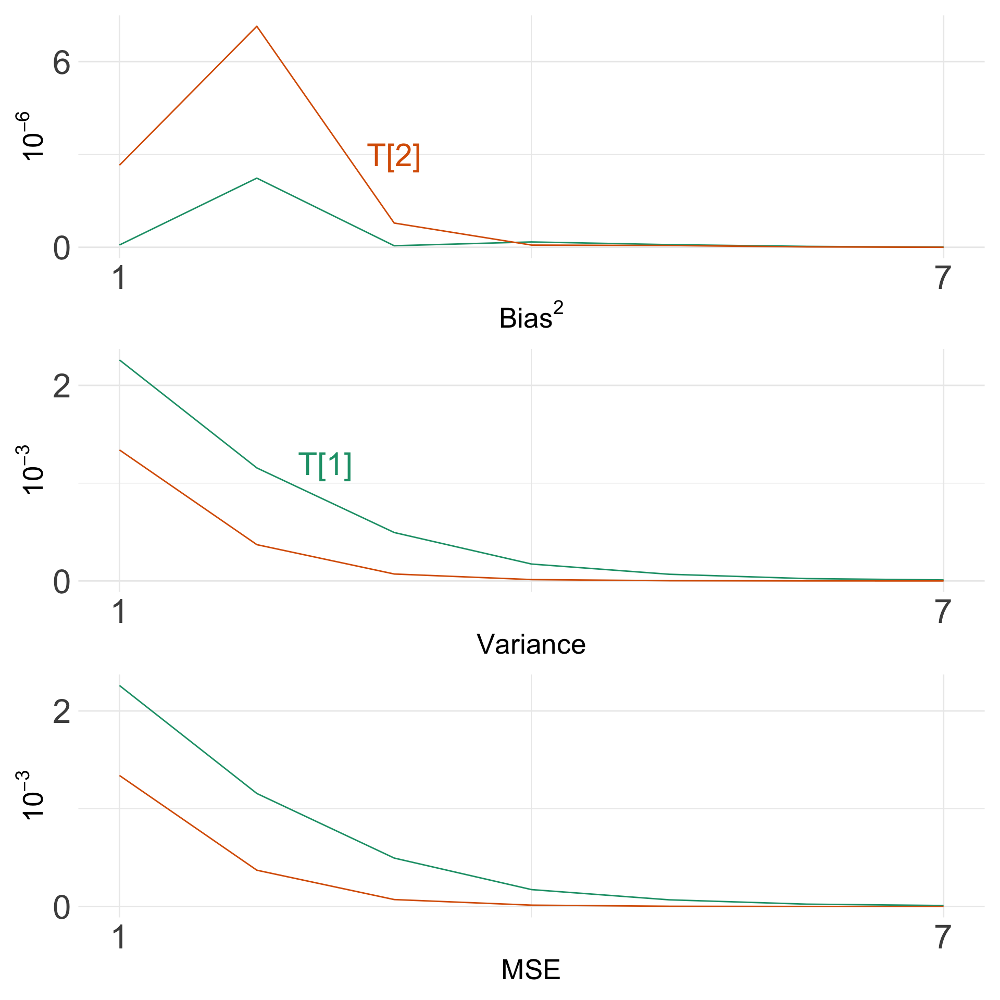
Bias-variance tradeoff
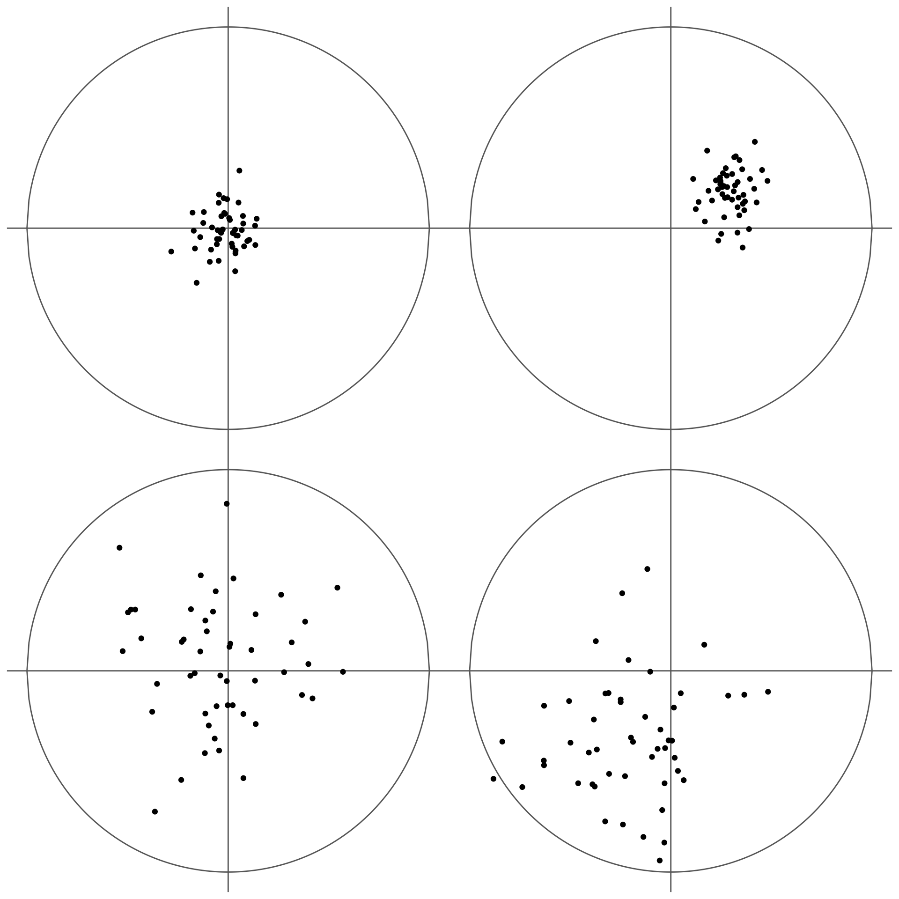
We may need to choose between an unbiased estimator and a more “efficient” estimator based on the MSE. Make a conscious decision based on the tradeoff.
What makes a good estimator?
- Accuracy: Bias
- Precision: Mean squared error
Exercises
Suppose \(X_1,X_2,...,X_n\overset{i.i.d}\sim F\). For each of the estimators \(\widehat{\theta}\), compute the MSE.
- \(F\) is \(\text{Unif}(0, \theta)\) and \(\widehat{\theta}=X_{(n)}\).
- \(F\) is \(\text{Binom}(10, \theta)\) and \(\widehat{\theta}=\cfrac{\overline{X}_n}{10}\).
- \(F\) is \({N}(\theta, 1)\) and \(\widehat{\theta}=\overline{X}_n\).
What makes a good estimator?
- Accuracy: Bias
- Precision: Mean squared error
- Covergence: Consistency
Consistency
- Recall, WLLN allowed us to get closer estimates with increasing sample size
\[\lim_{n\to\infty}P(|\overline{X}_n-\mu|\ge\varepsilon)=0,\varepsilon>0\]
- The convergence is generally desirable.
We say an estimate \(T_nn=h(X_1,X_2,\ldots X_n)\) is a consistent estimator for parameter \(\theta\) if \[T_n\overset{p}{\rightarrow}\theta.\]
What makes a good estimator?
- Accuracy: Bias
- Precision: Mean squared error
- Covergence: Consistency
The sampling distribution allows us to evaluate the quality of an estimator.
Sampling distributions
Example: Stealing bases
# A tibble: 166 × 2
pitcher_delivery catcher_throw
<dbl> <dbl>
1 1.38 1.82
2 1.53 1.89
3 1.15 1.89
4 1.35 1.89
5 1.54 1.9
6 1.22 1.91
7 1.22 1.92
8 1.34 1.92
9 1.25 1.92
10 1.53 1.93
11 1.3 1.93
12 1.2 1.93
13 1.23 1.93
14 1.4 1.93
15 1.12 1.93
16 1.31 1.93
17 1.52 1.94
18 1.28 1.94
19 1.1 1.94
20 1.36 1.94
21 1.3 1.94
22 1.46 1.95
23 1.37 1.95
24 1.3 1.95
25 1.46 1.95
26 1.25 1.95
27 1.44 1.96
28 1.28 1.96
29 1.59 1.97
30 1.32 1.97
31 1.28 1.97
32 1.4 1.97
33 1.28 1.97
34 1.38 1.97
35 1.49 1.98
36 1 1.98
37 1.15 1.98
38 1.23 1.99
39 1.4 1.99
40 1.47 1.99
41 1.25 1.99
42 1.4 1.99
43 1.26 1.99
44 1.41 1.99
45 1.24 1.99
46 1.38 1.99
47 1.24 2
48 1.35 2
49 1.36 2
50 1.47 2
51 1.33 2
52 1.42 2.01
53 1.11 2.01
54 1.46 2.01
55 1.42 2.01
56 1.28 2.01
57 1.4 2.03
58 1.39 2.03
59 1.47 2.03
60 1.35 2.03
61 1.57 2.03
62 1.59 2.04
63 1.33 2.04
64 1.43 2.05
65 1.16 2.06
66 1.38 2.07
67 1.25 2.08
68 1.47 2.08
69 1.48 2.09
70 1.14 2.11
71 1.46 1.89
72 1.33 1.91
73 1.46 1.92
74 1.48 1.92
75 1.28 1.93
76 1.28 1.95
77 1.68 1.96
78 1.25 1.96
79 1.37 1.97
80 1.36 1.97
81 1.26 1.97
82 1.25 1.97
83 1.35 1.97
84 1.39 1.97
85 1.25 1.97
86 1.1 1.98
87 1.41 1.98
88 1.44 1.98
89 1.28 1.98
90 1.57 1.99
91 1.47 2
92 1.13 2
93 1.57 2.01
94 1.57 2.01
95 1.51 2.01
96 1.41 2.01
97 1.24 2.01
98 1.37 2.01
99 1.47 2.01
100 1.54 2.02
101 1.52 2.02
102 1.38 2.02
103 1.17 2.02
104 1.29 2.03
105 1.35 2.03
106 1.52 2.03
107 1.15 2.03
108 1.36 2.03
109 1.2 2.03
110 1.54 2.04
111 1.33 2.04
112 1.54 2.04
113 1.29 2.04
114 1.3 2.04
115 1.27 2.05
116 1.09 2.05
117 1.13 2.05
118 1.12 2.05
119 1.32 2.06
120 1.22 2.06
121 1.52 2.06
122 1.39 2.07
123 1.45 2.07
124 1.42 2.08
125 1.41 2.08
126 1.37 2.09
127 1.36 2.09
128 1.2 2.1
129 1.47 2.12
130 1.53 2.15
131 1.48 2.17
132 1.5 1.88
133 1.3 1.92
134 1.36 1.92
135 1.45 1.93
136 1.13 1.93
137 1.19 1.93
138 1.14 1.94
139 1.29 1.95
140 1.49 1.95
141 1.35 1.96
142 1.5 1.96
143 1.4 1.96
144 1.36 1.96
145 1.31 1.96
146 1.25 1.97
147 1.4 1.97
148 1.23 1.98
149 1.39 1.98
150 1.5 1.99
151 1.38 1.99
152 1.26 1.99
153 1.65 1.99
154 1.48 1.99
155 1.17 1.99
156 1.73 1.99
157 1.47 1.99
158 1.69 2
159 1.34 2
160 1.3 2
161 1.47 2.01
162 1.34 2.01
163 1.22 2.01
164 1.26 2.01
165 1.38 2.01
166 1.28 2.02Question
- What is probability of getting to the base before the ball is caught at the second base if you can run in 3.5 seconds?
Model
pitcher_deliveryis a random sample of \(X\sim F_1\).catcher_throwis a random sample of \(Y\sim F_2\).- Let \(W=X+Y\) be the time from the start of pitching until the ball is caught at the second base.
Parameter of interest
- \(p=P(W > 3.5)\)
Estimator
- \(\widehat{p}_n=\frac{1}{n}\sum_{i=1}^n\mathbb{1}_{\{W_i>3.5\}}\)
We won’t assume the specifics of the distributions.
Example: Sampling distribution of the proportion
Let \(I_i=\mathbb{1}_{\{W_i>3.5\}}\) for \(i=1,2,...n\).
We already know that \(\mathbb{E}(\widehat{p}_n)=\mathbb{E}(\overline{I}_n)=\mathbb{E}(I)=P(W>3.5)=p\).
Can we fully specify the sampling distribution in terms of the parameter?
Example: Sampling distribution of the proportion
Let \(I_i=\mathbb{1}_{\{W_i>3.5\}}\) for \(i=1,2,...n\).
We already know that \(\mathbb{E}(\widehat{p}_n)=\mathbb{E}(\overline{I}_n)=\mathbb{E}(I)=P(W>3.5)=p\).
Can we fully specify the sampling distribution in terms of the parameter?
\[P(I_1=x)\begin{cases} p & x = 1 \\ 1-p & x = 0 \\ 0 & \text{otherwise} \end{cases}\]
\[\implies I_1\sim \text{Ber}(p)\] with
\[\mathbb{E}(I_1)=p\quad\text{and}\quad\text{Var}(I_i)=p(1-p).\]
\[\implies \mathbb{E}(\widehat{p}_n)=p\quad\text{and}\quad\text{Var}(\widehat{p}_n)=\frac{p(1-p)}{n}\]
How about the shape of the distribution?
Example: Sampling distribution of the proportion
If we could repeatedly conduct experiments with \(n=7\)…
Simulated with \(p=0.1\).

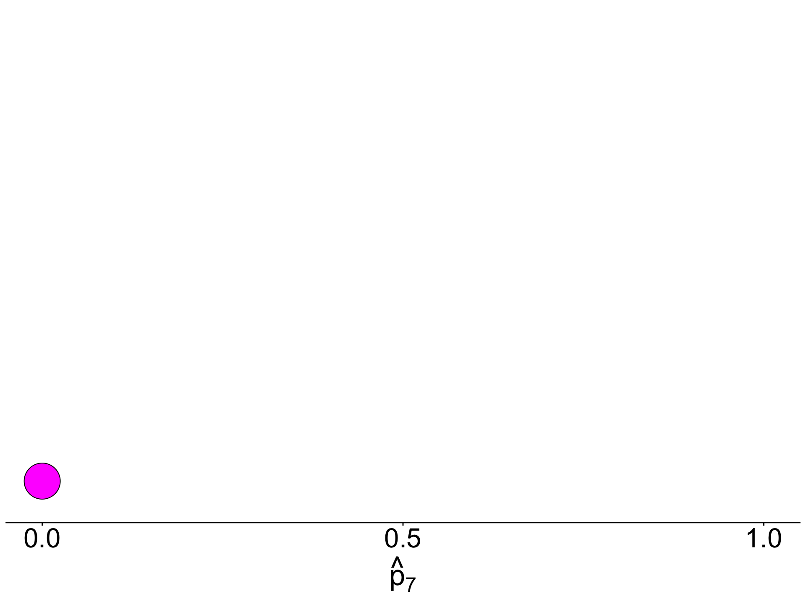
Example: Sampling distribution of the proportion
If we could repeatedly conduct experiments with \(n=7\)…
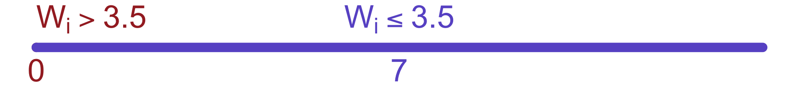
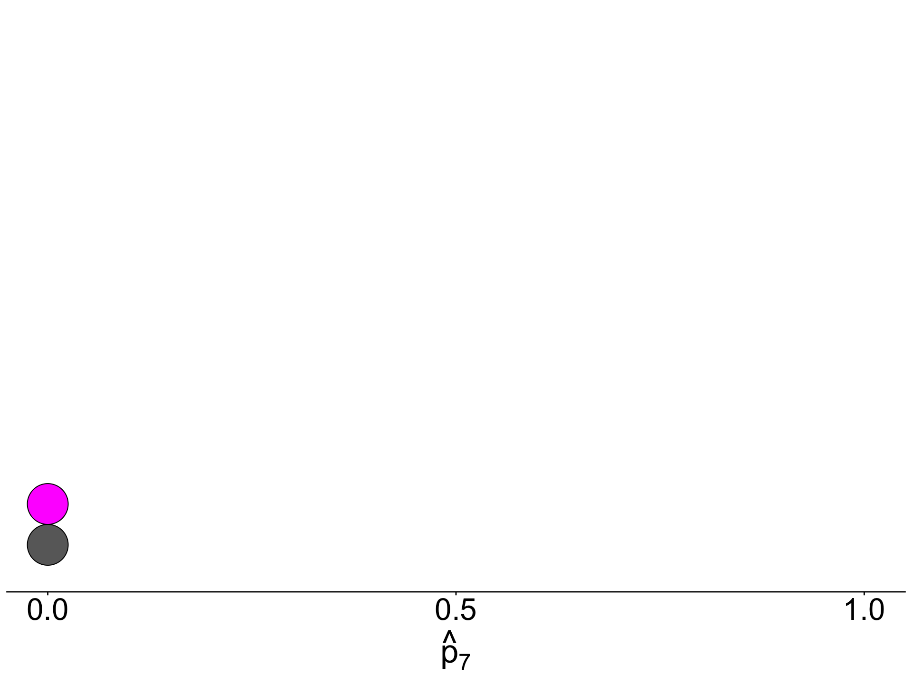
Example: Sampling distribution of the proportion
If we could repeatedly conduct experiments with \(n=7\)…

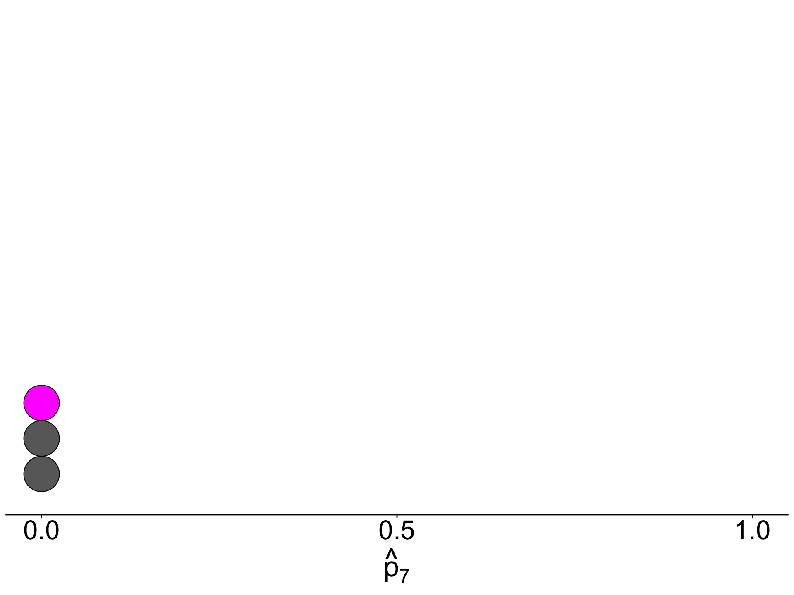
Example: Sampling distribution of the proportion
If we could repeatedly conduct experiments with \(n=7\)…
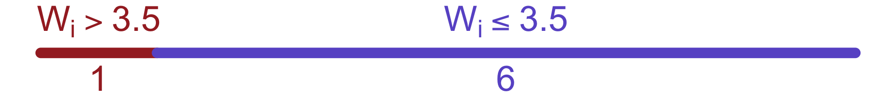
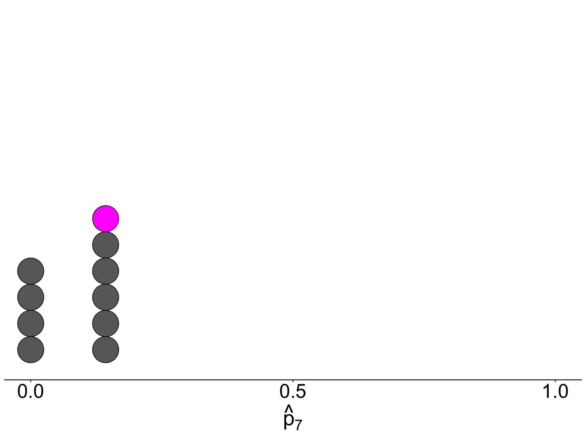
Example: Sampling distribution of the proportion
If we could repeatedly conduct experiments with \(n=7\)…
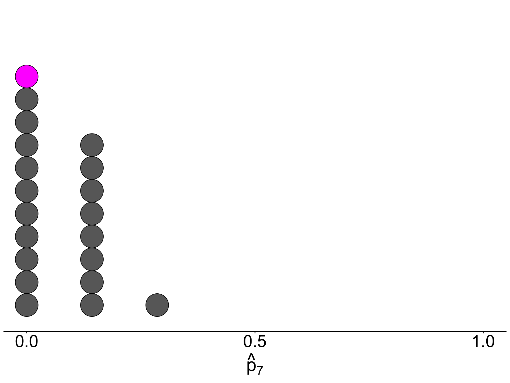
Example: Sampling distribution of the proportion
If we could repeatedly conduct experiments with \(n=10\)…
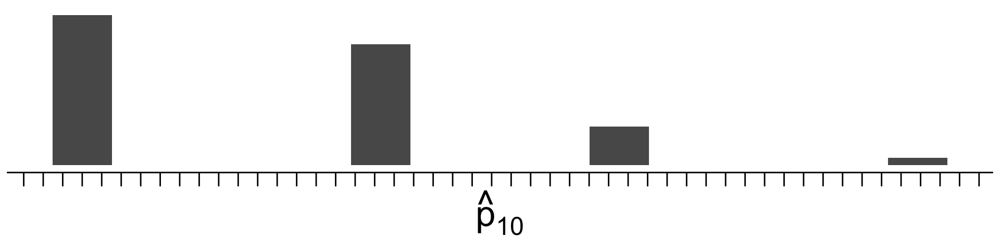
If we could repeatedly conduct experiments with \(n=100\)…
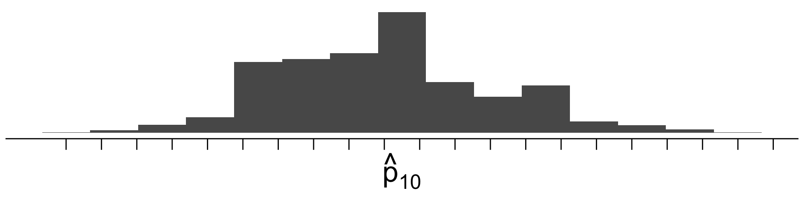
If we could repeatedly conduct experiments with \(n=500\)…
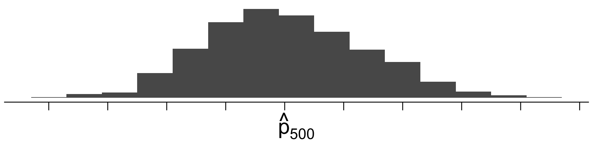
Recall: The Central Limit Theorem
- We say, \(Z_n\) converges in distribution to \(Z\sim{N}(0,1)\). That is, \[Z_n\overset{d}{\to}Z\quad\text{where}\quad Z\sim{N}(0,1).\]
Let \(X_1,X_2,...,X_n\overset{i.i.d}{\sim}F\) for any distribution \(F\) with a finite mean \(\mu\) and a finite variance \(\sigma^2>0\). Then
\[\lim_{n\to\infty}P(Z_n\le a)=\Phi(a)\]
where \(Z_n=\sqrt{n}\frac{\overline{X}_n-\mu}{\sigma}\) and \(\Phi(a)\) is the cumulative distribution function of the standard normal distribution.
Equivalently, we have \[\lim_{n\to\infty}P(\overline{X}_n\le a)=P(Y\le a)\] where \(Y\sim{N}\left(\mu, \frac{\sigma^2}{n}\right).\)
Example: Result of CLT for \(\widehat{p}_n\)
- \(\widehat{p}_n\) is a sample mean, \(\overline{I}_n=\frac{1}{n}\sum_{i=1}^nI_i\).
- As you increase \(n\), \(\widehat{p}_n\) converges in distribution to a normal random variable. \[\widehat{p}_n\overset{d}{\to}Y\] where \(Y\sim{N}\bigl(\text{______},\text{______}\bigr)\).
- Equivalently, \[\text{_______________}\overset{d}{\to}Z\sim{N}(0,1).\]
Standardization of random variables
For any random variable \(X\) with mean \(\mu\) and variance \(\sigma^2\),
\[\frac{X-\mu}{\sigma}\]
results in a mean of _________ and variance of _________.
For any sample mean \(\overline{X}_n\) from population mean \(\mu\) and population variance \(\sigma^2\),
\[\text{____}\frac{\overline{X}_n-\mu}{\sigma}\]
results in a mean of _________ and variance of _________.
Sampling distribution of the sample proportion
- \(n\widehat{p}_n\) follows a binomial distribution.
- In practice, we approximate the distribution with a normal distribution based on the CLT when \(n\) is sufficiently large.
\[\widehat{p}_n\overset{\cdot}{\sim} N\left(\widehat{p}_n, \cfrac{\widehat{p}_n(1-\widehat{p}_n)}{n}\right)\]
When can we assume it’s reasonable to apply the CLT?
Consider an event \(A\) in the sample space of a random experiment with \(p=P(A)\). Let \(N_A\) be the number of times \(A\) occurs when the experiment is repeated \(n\) independent times.
\[\widehat{p}_n=\frac{N_A}{n}\] is an estimator for \(p\) with
- \(\mathbb{E}(\widehat{p}_n)=p\);
- \(\text{Var}(\widehat{p}_n)=\frac{p(1-p)}{n}\); and
- \(\widehat{p}_n\overset{d}{\to}Y\), where \(Y\sim{N}\left(p, \cfrac{p(1-p)}{n}\right)\).
Example: Sampling distribution of a sample mean
Remember Michael’s coffee shop…
| 2 | 4 | 2 | 5 | 6 | 0 | 3 |
We estimated
\[\widehat{\lambda}=\overline{Y}_n\]
What is the sampling distribution of \(\widehat{\lambda}\)?
Example: Sampling distribution of a sample mean
Model
\[Y_1,Y_2,\ldots,Y_7\overset{i.i.d}\sim \text{Pois}(\lambda)\]
Sampling distribution of the estimator
\[\widehat{\lambda}=\overline{Y}_7=\cfrac{1}{7}\sum_{i=1}^7 Y_i\]
Example: Sampling distribution of a sample mean
Model
\[Y_1,Y_2,\ldots,Y_7\overset{i.i.d}\sim \text{Pois}(\lambda)\]
Sampling distribution of the estimator
\[\widehat{\lambda}=\overline{Y}_7=\cfrac{1}{7}\sum_{i=1}^7 Y_i\]
Let’s simulate the estimates with \(\lambda=1\).
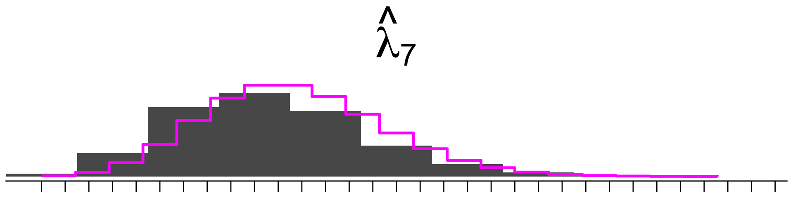
- We could try to study the distribution of the sample mean analytically and derive the PMF of the sampling distribution.
- OR…
Example: Sampling distribution of a sample mean
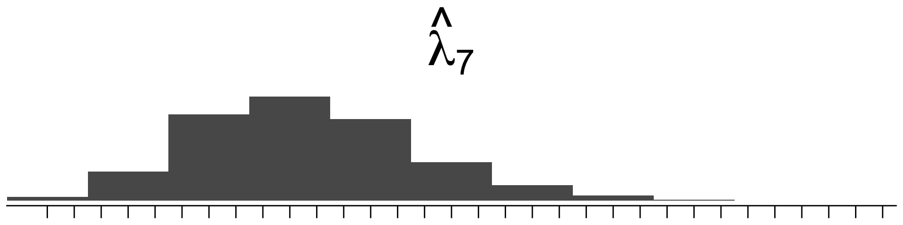
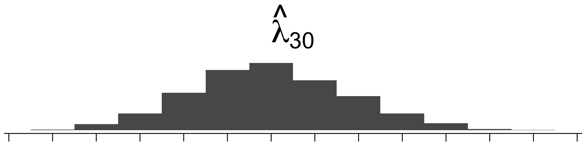
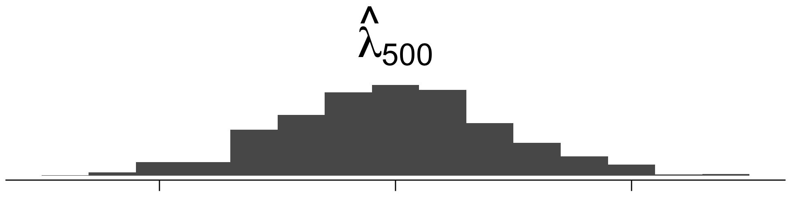
- We can apply the CLT for sufficiently large samples.
- How large is sufficiently large?
A note on sample sizes required for CLT
\[\text{Ber}(p)\]
\[\text{Pois}(p)\]
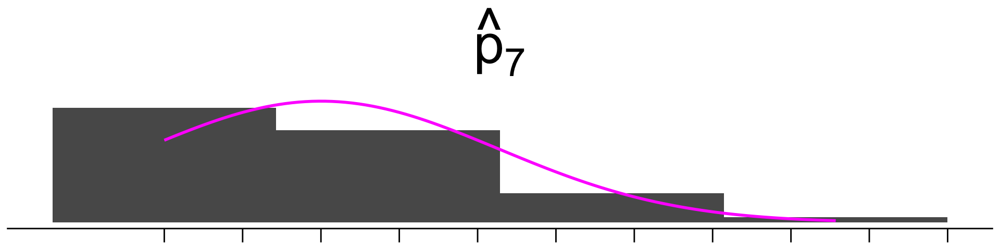
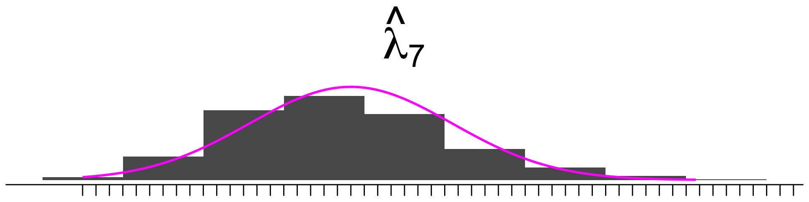
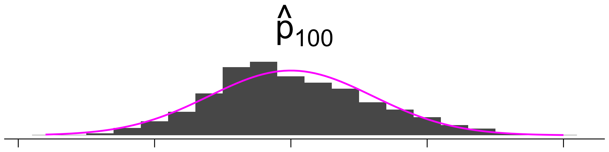
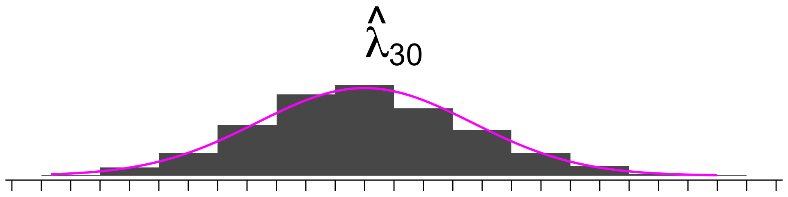
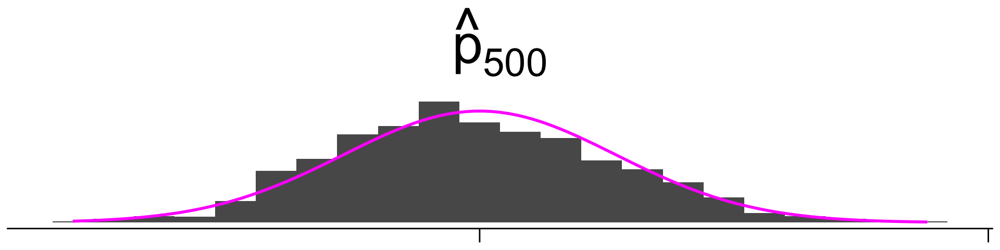
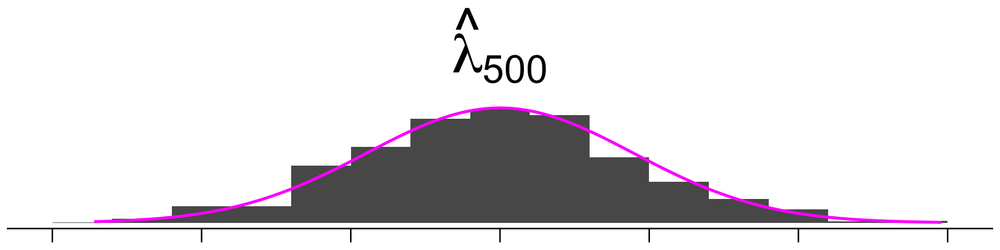
- We need a “sufficiently large” sample to apply the CLT.
- The general rule of thumb is \(n\ge30\)
(or \(n\ge50\) depending on what you are reading), but the skewness of the population distribution can slow the convergence. - For proportions, \(n\) should be large enough such that
_______________________ &
_______________________.
Exercises
Suppose \(X_1,X_2,...,X_n\overset{i.i.d}\sim \text{Unif}(\theta-1, \theta+1)\). Find the asymptotic distribution of \(\widehat{\theta}\)
Asymptotic refers to behaviours in the limit, in particular, as \(n\to\infty\).
Exercises
Suppose \(X_1,X_2,...,X_n\overset{i.i.d}\sim \text{Unif}(\theta-1, \theta+1)\). Find the asymptotic distribution of \(\widehat{\theta}=\overline{X}_n\).
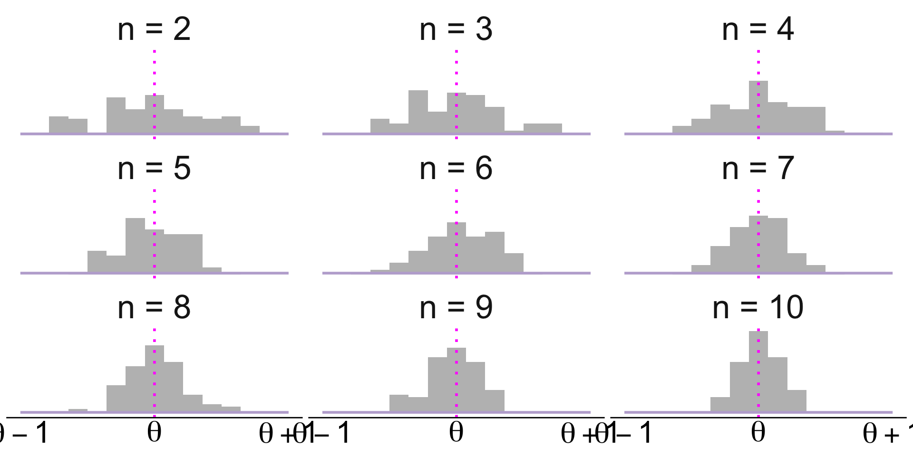
Summary
You can assess the quality of an estimator with respect to its target parameter based on bias, MSE or efficiency, and consistency.
To assess the qualities, you need to study the sampling distribution.
- When we have a sufficiently large sample, we can approximate the sampling distribution for sample means based on the CLT
\[\widehat{p}_n\overset{\cdot}{\sim} N\left(\widehat{p}_n, \cfrac{\widehat{p}_n(1-\widehat{p}_n)}{n}\right)\]
for a proportion \(p\), and more generally,
\[\widehat{\theta}=\overline{X}_n\overset{\cdot}{\sim} N\left(\overline{X}_n, \cfrac{\sigma^2}{n}\right)\]
for a population mean, \(\theta\).
© 2026. Michael J. Moon. University of Toronto.
Sharing, posting, selling, or using this material outside of your personal use in this course is NOT permitted under any circumstances.